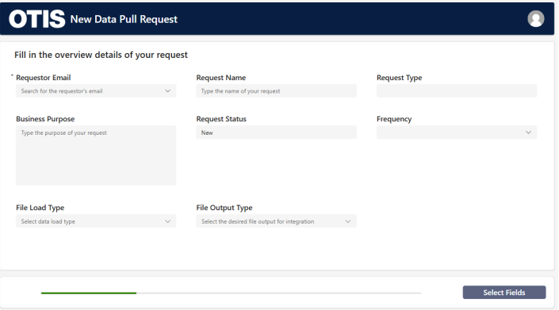
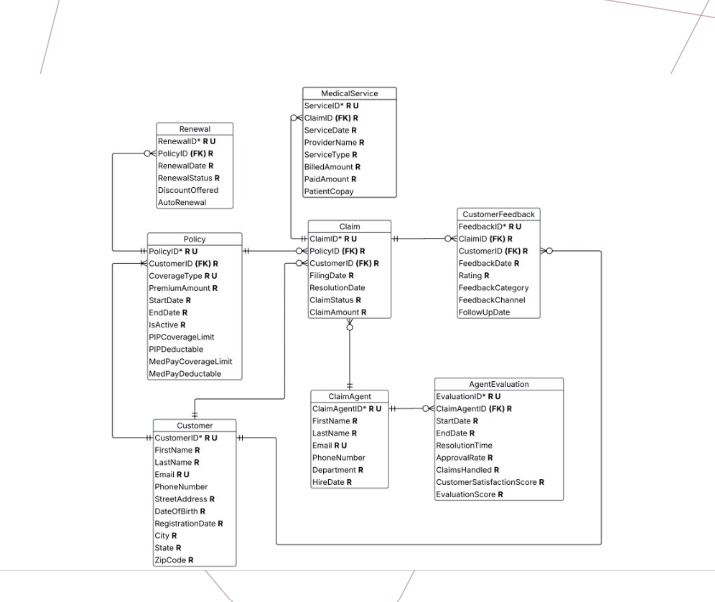

01 / Workflow design
Otis Elevator · HR Data Request System
Built a Power Apps request flow for employees to define needed HR fields and filters, with a Dataverse data model and an admin approval process.
See project in portfolio ↗Analytics & business intelligence
I'm Devon Durant, a UConn graduate in Business Analytics and Information Management. My work spans process improvement, data systems, and customer analysis.
Selected work
Three projects across Power Apps, SQL, Excel, and Power BI. Open the full portfolio for more screenshots and detail.

Built a Power Apps request flow for employees to define needed HR fields and filters, with a Dataverse data model and an admin approval process.
See project in portfolio ↗
Designed a relational database connecting customers, policies, claims, and renewals. Used SQL to examine policy relationships and identify pending or cancelled renewals for follow-up.
See project in portfolio ↗Used two months of sample data to compare order volume and on-time performance before and after rush-hour staffing and layout changes. Average on-time performance rose from 71% to 81% in the modeled analysis.
See project in portfolio ↗About
I earned a B.S. in Business Analytics and Information Management from the University of Connecticut, concentrating in Business Intelligence. I enjoy turning messy processes and data into clear systems and useful insights.
My toolkit includes Excel, SQL, Power BI, Tableau, Power Apps, Dataverse, Python, and Power Fx. I also bring hands-on operations experience from Target, where I work as a Guest Advocate in Manchester, Connecticut.